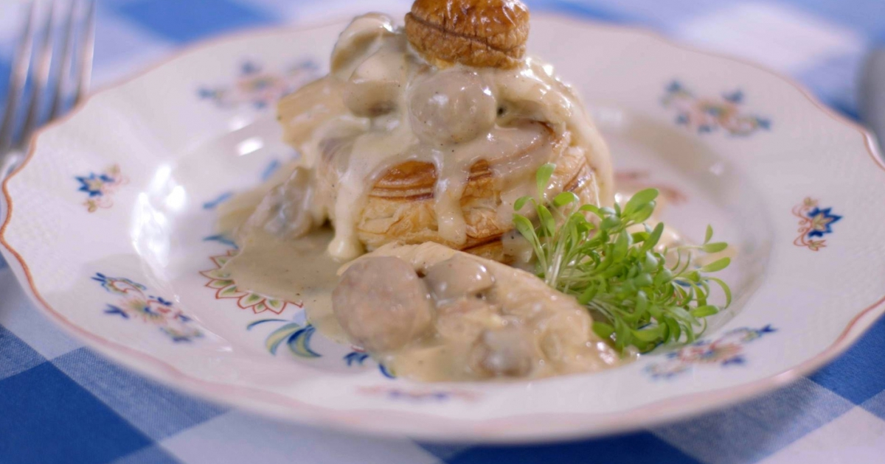

Vol-au-vent

- 75-90 min
- Iets moeilijker
- Goedkoop
- Europees
- Maaltijd
ZO MAAK JE 'T
De bouillon
- Bereid een ketel met een (variant op de) klassieke groentebouillon. Je kan ook zelf groentebouillon maken.
- Breng een ruime hoeveelheid water aan de kook. Spoel alle groenten, snij ze grof en doe ze in de grote pot met water.
- Voeg de verse kruiden, wat zout en de specerijen toe.
- Laat de bouillon kort sudderen en leg er vervolgens de kip in.
- Laat de kippenbouillon een uurtje koken. Gebruik een schuimspaan om tussendoor het vet en onzuiverheden weg te scheppen.
- Schep de gare kip uit de pot en laat ze afkoelen.
- Zeef de bouillon. Een deel ervan heb je straks nodig voor het garen van de gehaktballetjes en de bereiding van de saus.
De videevulling
- Meng het gehakt, samen met een ei en het broodkruim. Kruid met wat peper van de molen en zout. Rol het vleesmengsel tot identieke kleine balletjes van ongeveer een centimeter diameter.
- Breng een deel van de (gezeefde) kippenbouillon aan de kook. Laat de balletjes daarin enkele minuten garen op een matig vuur.
- Snij de paddenstoelen in kwartjes.
- Smelt een klont boter in een pan en bak de stukjes paddenstoel. Voeg pas tijdens het bakken een geplet teentje knoflook toe zodat de look niet kan verbranden. Voeg een beetje peper en zout toe. Laat de champignons kleuren en zet ze opzij.
- Pluk al het vlees van het karkas van de kip. Beslis hoe je de kip wil serveren: in eerder grote stukken, hapklare brokken of extra fijn. Zet het vlees even opzij.
- Start de bereiding van de saus met een roux. Smelt de boter in een kookpot en voeg de bloem eraan toe. Laat het bloemmengsel al roerend “opdrogen”, maar let erop dat de roux niet aanbakt.
- Zodra je een lichte biscuitgeur ruikt, schenk je een deel van de gezeefde kippenbouillon in de pot. Blijf geduldig doorroeren met een garde om klontertjes te vermijden.
- Schenk er af en toe wat bouillon bij, en wacht tot de saus bubbelt. Ga door tot je een gebonden, maar tegelijk voldoende vloeibare saus krijgt.
- Voeg tenslotte een scheutje madeira (of sherry) toe en ook de room. Roer de saus zorgvuldig.
- Voeg de gebakken paddenstoelen, de stukjes kip en de gehaktballetjes toe aan de saus. Druppel wat vers citroensap in het mengsel en kruid de vol au vent naar smaak met wat peper, zout en versgeraspte nootmuskaat. Roer, proef en voeg naar smaak een extra beetje madeirawijn.
Ingredienten
- 300 g gehakt
- 1 ei
- 1 hoevekip
- 1 eetlepel broodkruim, peper, zout
- 1 klontje boter
- 1 teentje look
- 250 g kleine Parijse champignons
- 60 g boter
- 80 g bloem
- 1,5 l zelfgemaakte kippenbouillon
- 1 scheutje madeirawijn of sherry
- 1,5 dl room
- 0,5 citroen, nootmuskaat